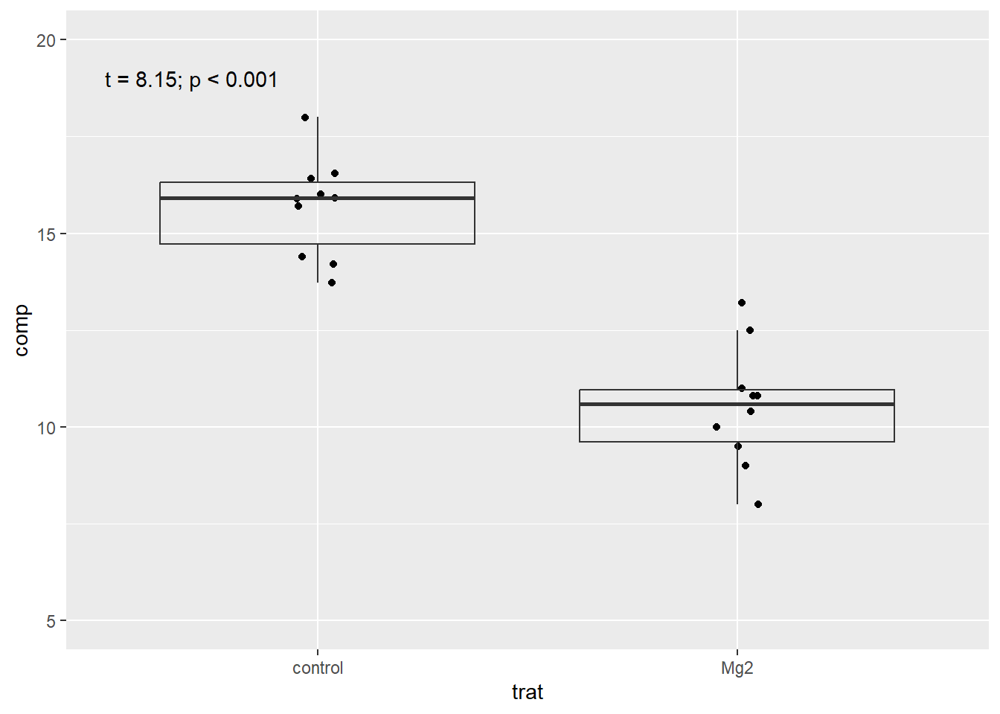

library(tidyverse)
library(readxl)
mg <- read_excel("dados-diversos.xlsx")
mg |>
ggplot(aes(trat, comp))+
geom_jitter(width = 0.05)+
geom_boxplot(fill = NA,
outlier.colour = NA)+
ylim(5, 20)+
annotate(geom = "text",
x = 0.7, y = 19,
label = "t = 8.15; p < 0.001")